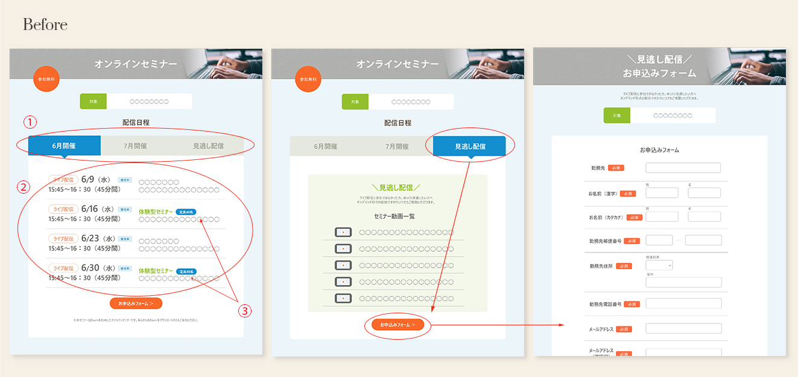
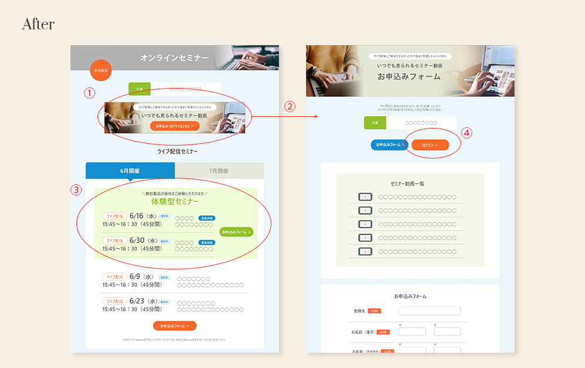

Works
- 概要
- 教職員向けオンラインセミナー
- 制作目的
-
自社製品の活用方法や事例を紹介し、学校現場における利用推進・拡販を目指す。
- ターゲット
-
教職員、教育委員会、自治体
- チーム人数
-
9名（全体運営4名、デザイナー1名、コンテンツ企画4名）
- 担当範囲
-
申込フローの確定、Webページの動作確認・改善案の提案、配信メールの作成（申込完了メール、集客メルマガ等）
- 課題
-
- ①
-
ライブ配信と見逃し配信（オンデマンド形式）が並列しており違いが分かりづらい。
- ②
-
ライブ配信では、2種類のコンテンツ（視聴のみ・体験型）を隔週で開催。日程順に並べているが、違いが分かりづらい。
- ③
-
体験型セミナーは定員が決まっているため、満席になるよう目立たせたい。

- 改善後
-
- ①
-
見逃し配信をバナー表示に。いつでも見られることが分かるよう名称も変更。
- ②
-
Topページから申込みフォームまで2回クリック → 1回クイックで遷移できるようにした。
- ③
-
体験型セミナーは色枠で囲い上部へ配置。申込ボタンも別に設置し区別がつきやすくなるようにした。
- ④
-
ログインページは申込完了後のメールにのみURLを記載していたが、メール紛失や再送信の問合せを防ぐためログインボタンをWeb上にも設置。
